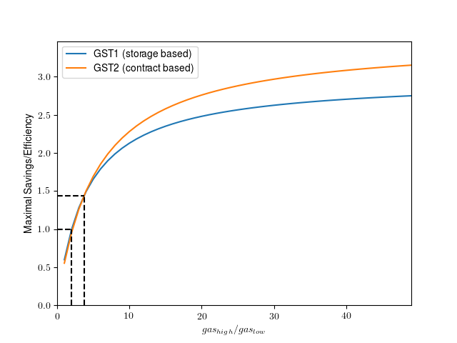

GasToken is a new, cutting-edge Ethereum contract that allows users to tokenize gas on the Ethereum network, storing gas when it is cheap and using / deploying this gas when it is expensive. Using GasToken can subsidize high gas prices on transactions to do everything from arbitraging decentralized exchanges to buying into ICOs early. GasToken is also the first contract on the Ethereum network that allows users to buy and sell gas directly, enabling long-term "banking" of gas that can help shield users from rising gas prices.
What is Gas?
Gas is a fundamental resource in the Ethereum network. Every transaction on the network must include some gas, and the fee paid to miners for each transaction is directly proportional to the gas consumed by a transaction. GasToken allows a transaction to do the same amount of work and pay for less gas, saving on miner fees and costs and allowing users to bid higher gas prices without paying correspondingly higher fees. Using GasToken on an eligible transaction, you can save money on the Ethereum network today.Why?
Gas prices on Ethereum are hard to predict; they can be as cheap as 1 gwei or less at off-peak hours, while some transactions pay into the hundreds of gwei to buy into that juicy ICO or hit an order on EtherDelta before any other players. Users who need to be mined quickly or first often engage in fierce bidding wars, bidding wars in which using GasToken provides an enormous advantage by letting you perform the same transactions while spending less gas.Compounding this effect, Ethereum blocks are starting to fill up, making block space ever more coveted.
How?
GasToken works by taking advantage of the storage refund in Ethereum. To encourage contracts to delete storage variables (that all nodes have to store forever!), Ethereum provides a refund when a storage element is deleted. This refund can pay for up to half of the gas used by a contract transaction (simple sends are not eligible for a refund, since they already use the minimum amount of gas; batched sends to contracts, however, can benefit from GasToken).The way GasToken works is simple: you create (or
mint) GasToken tokens by saving data into the GasToken contract's storage, when gas prices are low. When gas prices
are high (during an ICO, during peak hours, whatever), you spend (or free) GasToken tokens by sending them back to the GasToken contract for destruction, freeing up the
data saved in an earlier step. This new transaction now gets a refund, making it much cheaper to execute than the same transaction that doesn't use
GasToken. The general mechanism of banking storage at low prices and releasing it at high prices had
been previously suggested for miners
(a miner that encounters a non-full block has incentive to fill it up with storage-filling transactions). GasToken extends this idea to all Ethereum users (not just miners) by
introducing a simple way of tokenizing stored gas. GasToken complies with the ERC20 token
standard, thus allowing free exchange of gas tokens between users.
There are actually two versions of GasToken: one that uses storage to bank gas, and another one that banks gas by creating contracts. The latter takes advantage of the gas refund obtained when deleting a whole contract. The two GasToken variants have different efficiency profiles, and users should choose which is more appropriate for their use case (see: GST1 vs. GST2).
It's a simple, powerful idea. Use GasToken in this manner, and pay less per contract transaction than anyone else on the Ethereum network.
Gas Savings Calculator
This simple calculator can help with using GasToken. Plug in some numbers for the (low) gas cost at mint time and the (high) gas cost at free time. Specify the gas cost of the transaction that should benefit from GasToken savings and check how much you might save! Note that the granularity of our token is in 0.01 GST1/GST2 increments.| Gas Price at Mint Time: | 1 | Gwei | |
| Gas Price at Free Time: | 50 | Gwei | |
| Gas used by Transaction: | 2000000 | Gas | |
| Number of Tokens Minted & Freed: | 0.48 | ||
| Cost of Minting: | Gas | ||
| Cost of Freeing: | Gas | ||
| Total Transaction Cost: | Gas | ||
| Savings: | Eth | ||
| Efficiency: |
Using GasToken
You can use GasToken by plugging this abi into any Ethereum contract interface (myetherwallet, Mist, Solidity).GST1 is registered on ENS at gst1.gastokenio.eth, and is deployed at
0x88d60255F917e3eb94eaE199d827DAd837fac4cB.
GST2 is registered on ENS at gst2.gastokenio.eth and is deployed at
0x0000000000b3F879cb30FE243b4Dfee438691c04.
To create tokens (banking gas), call the mint function. To receive a refund (deploying banked gas), call the free function. That's all there is to it, the rest is a standard ERC20.
We provide some example code that can be used to generate GasToken on the Ethereum network here. Below we also show a simple code snippet for how to free tokens and use the refunds in an expensive transaction. None of our code has been audited for security, and we do not recommend trusting funds to it without extensive evaluation.
GST1 vs. GST2
How do the two versions of GasToken (GST1 and GST2) differ? Below we compare the most salient features. More details about how some these values are obtained are in the next section. Gas price volatility is the ratio between high gas prices and low gas prices (e.g., if prices go from 1 gwei to 100 gwei the volatility is 100$\times$). The efficiency is the ratio between the amount of ether spent to mint and free tokens, and the amount of ether saved via gas refunds.| GST1 | GST2 | |
|---|---|---|
| Refund mechanism | SSTORE (deleting storage) | CREATE + SELFDESTRUCT (deleting contracts) |
| Required gas price volatility | $\mathbf{2.02 \times}$ | $2.14 \times$ |
| Most efficient variant when volatility is | between $2.01$ and $3.71$ | between $3.71$ and $\infty$ |
| Maximal savings/efficiency | $2.97$ | $\mathbf{3.49}$ |
| Room for further optimization | Unlikely | Probably |
| Language | Solidity | Solidity |
Due to a bug in the Solidity compiler that we discovered while working on GasToken, under rare circumstances, freeing GST2 tokens may not yield a gas refund. Fortunately, there is a simple workaround: Whenever you call
free, freeFrom, freeUpTo, or freeFromUpTo to free $n$ tokens, make sure that the call has at least $25710 + n \cdot (1148 + 5722 + 150)$ gas available.
This example contract illustrates how to check that this condition holds. The comments in the GST2 source code contain further details.
The Details
An obvious question is when it's efficient for a user to use GasToken in their own transactions. Bear with us for a little math here. If you're just here for the shiny widget, use the calculator.Writing permanent blockchain state costs a significant amount of gas. For instance, the
SSTORE instruction currently costs 20000 gas when writing a non-zero value to storage. Erasing the storage
(by overwriting it with zeros) costs an additional 5000 gas, but also provides a refund of
15000 gas.
Suppose we write to storage when gas has a price of $\mathit{gas}_\mathit{low}$ and redeem the token for a refund when gas prices are high, at $\mathit{gas}_\mathit{high}$. Our total expenses per storage word are: \[ 20000 \cdot \mathit{gas}_\mathit{low} + 5000 \cdot \mathit{gas}_\mathit{high} \;, \] and we receive a refund per word of: \[ 15000 \cdot \mathit{gas}_\mathit{high} \;. \] We could expect savings whenever $\mathit{gas}_\mathit{high} > 2\cdot \mathit{gas}_\mathit{low}$. That is, if gas prices at least double between periods of low usage and periods of high usage, a storage refund could be efficiently used. Moreover, in the best case, we can expect a savings/efficiency of up to $3\times$. That is, if we assume creating a GasToken is "free" (or $\mathit{gas}_\mathit{low}$ is just much lower than $\mathit{gas}_\mathit{high}$), then we are essentially paying $5000$ gas to get $15000$ in return.
The dynamics for contract-based refunds are even a bit better (in principle). Creating a new contract costs 32000 gas, whereas a
CALL followed by a SELFDESTRUCT costs 700+5000 gas and refunds 24000. Thus, a savings could be achieved when $\mathit{gas}_\mathit{high} > 1.75\cdot \mathit{gas}_\mathit{low}$ and the maximal possible savings/efficiency is 4.2. This ignores some inherent hidden costs (such as the 200 gas paid per byte of the created contract), so in practice the numbers are a bit lower.
Indeed, our GasToken token implementations don't quite reach these theoretically optimal numbers, as there is some additional work to do to keep track of the storage words or the addresses of the contracts to create and delete. Some details on how we optimized the gas cost of the contract-based variant of GasToken are below. Fortunately, many of the incurred costs are mostly independent of the number of tokens minted or redeemed in a single transaction. That is, the more tokens we create or free in a single transaction, the closer we'll get to the optimal gas refund. Keep in mind that gas refunds can pay at most for half the gas cost of a transaction, so freeing more tokens is only worthwhile if we're planning on spending lots of gas to begin with.
For both GasToken variants, we can give pretty tight linear upper bounds on the cost of minting and freeing $x$ tokens. For the storage-based GasToken (GST1), we have \begin{align*} \mathit{cost}_\mathit{mint}(x) &\leq 34435 + x \cdot 20046 \\ \mathit{cost}_\mathit{free}(x) &\leq 14505 + x \cdot 5046 \\ \mathit{refund}(x) &= 15000 \cdot x && \text{(up to half the gas cost of the transaction)} \end{align*} The costs break down roughly as follows. When minting tokens, we pay the transaction base fee (24000 gas) and two storage words get updated for bookkeeping purposes (roughly 10000 gas, assuming our balance is non-zero). Every word written into the contract's storage costs roughly an extra 20000 gas. When releasing tokens, we'll be calling our GasToken token from within the transaction we wish to save gas fees on. So we ignore the base fee here. For a large number of freed storage words $x$, we approach $\mathit{cost}_\mathit{mint}(x) \approx x \cdot 20046$ and $\mathit{cost}_\mathit{free}(x) \approx x \cdot 5046$ which is very close to the theoretical optimal (we might start saving transaction fees whenever $\mathit{gas}_\mathit{high} \geq 2.02\cdot \mathit{gas}_\mathit{low}$, and approach a savings of $\frac{5046}{15000} = 2.97$ when freeing a large number of storage words at extremely volatile gas prices).
For the contract-based GasToken (GST2), we have \begin{align*} \mathit{cost}_\mathit{mint}(x) &\leq 34430 + x \cdot 36543 \\ \mathit{cost}_\mathit{free}(x) &\leq 14154 + x \cdot 6870 \\ \mathit{refund}(x) &= 24000 \cdot x && \text{(up to half the gas cost of the transaction)} \end{align*} This variant has more overhead, mostly due to computing the addresses of contracts to create/delete. When creating and deleting tokens in large batches, this token can be efficient when $\mathit{gas}_\mathit{high} \geq 2.14\cdot \mathit{gas}_\mathit{low}$ which is slightly worse than what we got with the storage version. However, the savings could potentially be as high as $\frac{6870}{24000}=3.49$ in this case, due to the higher refunds obtained when deleting contracts. When gas variations become large enough (when $\mathit{gas}_\mathit{high}$ is over a factor of 3.71 or so larger than $\mathit{gas}_\mathit{low}$), the contract-based variant actually becomes more viable. The above upper bounds for the contract-based scheme are also not quite tight, so in practice we'll probably end up saving slightly more than what we'd expect!

A picture is worth a thousand words. The plot shows the maximal possible savings/efficiency that could be attained by using either GasToken variant, as the fluctuation in gas prices increases (and assuming we free an extremely large number of tokens). There is a small regime (between the dotted curves) where the storage scheme has positive efficiency and beats the contract scheme. For large fluctuations, the contract-based scheme is always better.
GST2 Optimizations
On amint(x) call, the GST2 variant of GasToken creates $x$ child
contracts. The code of the child contracts should be as small as possible,
as every byte of code costs an extra 200 gas when calling CREATE.
Each child contract implements the following simple functionality:
if (msg.sender == GST2.address) {
SELFDESTRUCT(msg.sender);
}
PUSH15 0xb3f879cb30fe243b4dfee438691c04
CALLER
XOR
PC
JUMPI
CALLER
SELFDESTRUCT
mint is only about 150 gas).
If we could make use of address 0x0 for GasToken,
we could save an extra 3000 gas or so for every created contract!
How do we create such a short address? In Ethereum, a newly created contract's address is defined as
KECCAK256(RLP_ENCODE([addr, nonce])) where addr is the
address of the parent contract or account, nonce is a counter
that gets incremented at each contract creation, RLP_ENCODE is
Ethereum's RLP encoding,
and KECCAK256 is the standard hash function used in Ethereum.
Thus, to create a contract at a short address, we simply iterated through public key values and small nonces until we found a pair that worked. We then created an account with that public key, and generated a few contracts to get the
nonce to the right value.
Note that to get a hash with $k$ leading zero bytes,
you need to go through $2^{8k}$ pairs on average,
or about 1 trillion pairs in our case. Luckily, this search
can be performed offline / off-chain, and it has to be done just once.
GasToken GST2 is now deployed, don't worry about it!
Incidentally, we recently realized that the Ethereum Name Service Registrar contract is deployed at address 0x314159265dD8dbb310642f98f50C066173C1259b the leading 4.5 bytes of which encode $\pi$. If you know of even "rarer" addresses in Ethereum (that is, with an over 5 byte recognizable pattern), let us know!
Finally, when releasing tokens, our GasToken contract has to figure out the addresses at which the children were created (keeping these addresses in storage would be way to expensive, so we recompute them on the fly). This required implementing the
RLP_ENCODE([addr, nonce])
function in Solidity. Our current implementation costs about
500-1000 gas for values of nonce up to a few billion.
This can likely be improved, and a more efficient RLP implementation
could lead to a slightly better GasToken variant.
FAQ
When is the ICO?
There's no ICO, token launch, or whatever your lawyers want to call it today. Just start using GasToken, on the chain, right now.
Who is behind this?
We are a team of blockchain researchers from around the world:
We offer absolutely no support, guarantees, advice, or other help with GasToken. If you like it, use it.
- Lorenz Breidenbach (ETH Zürich, Cornell Tech, IC3)
- Phil Daian (Cornell Tech, IC3)
- Florian Tramèr (Stanford University)
We offer absolutely no support, guarantees, advice, or other help with GasToken. If you like it, use it.
How did GasToken originate?
GasToken was originally created in September 2017, when we were investigating two questions: what is the impact of front-running on decentralized exchanges vulnerable
to it, and how should blockchain resources be priced ideally? The majority of the pre-release supply of GasToken was created by The Initiative for Cryptocurrencies and Contracts,
the parent organization of GasToken. IC3 holds a supply of GasToken for research and on-network use, and is actively using GasToken in research projects.
The above authors of GasToken did not hold any personal GasToken at release-time.
GasToken is part of a wider initiative headquartered at IC3, Project Chicago for the Study of Cryptocommodities. We believe that economically speaking, all blockchains can be viewed as a two-sided market for a set of virtual resources (block space, UTXO space) backed by digital resources (computation, network bandwidth and latency, storage) with physical costs (in power, space, and capital). Project Chicago consequently aims to understand questions of how to price such resources, the consequences of mispricing, and the new generation of financial instruments that can be created around these resources for price discovery.
This includes the study of oracle-based and in-protocol futures for Bitcoin block and UTXO space, and for Ethereum state and block space, as well as rigorous study of potential instruments covering network resources. It also includes the exploration of interesting technologies like GasToken, which are only possible due to quirks in distributed-trust based crypto-economic mechanisms on blockchains like Ethereum. Project Chicago is an academic project, and aims at releasing publications, blog posts, and code fostering a better understanding of decentralized resource pricing.
To get more news on GasToken and Project Chicago, follow us on the following platforms:
GasToken is part of a wider initiative headquartered at IC3, Project Chicago for the Study of Cryptocommodities. We believe that economically speaking, all blockchains can be viewed as a two-sided market for a set of virtual resources (block space, UTXO space) backed by digital resources (computation, network bandwidth and latency, storage) with physical costs (in power, space, and capital). Project Chicago consequently aims to understand questions of how to price such resources, the consequences of mispricing, and the new generation of financial instruments that can be created around these resources for price discovery.
This includes the study of oracle-based and in-protocol futures for Bitcoin block and UTXO space, and for Ethereum state and block space, as well as rigorous study of potential instruments covering network resources. It also includes the exploration of interesting technologies like GasToken, which are only possible due to quirks in distributed-trust based crypto-economic mechanisms on blockchains like Ethereum. Project Chicago is an academic project, and aims at releasing publications, blog posts, and code fostering a better understanding of decentralized resource pricing.
To get more news on GasToken and Project Chicago, follow us on the following platforms:
Is your contract secure?
Maybe.
We are a team of experienced Solidity developers with an intimate knowledge of the Ethereum Virtual Machine. We have stared at the code for a long time and don't see any obvious vulnerabilities. Our contract is thoroughly tested, both through unit tests and through a live on-network deployment. That being said, no independent audit has been or will be commissioned. We encourage you to read the code and decide for yourself whether it's secure; it's quite simple!
We are a team of experienced Solidity developers with an intimate knowledge of the Ethereum Virtual Machine. We have stared at the code for a long time and don't see any obvious vulnerabilities. Our contract is thoroughly tested, both through unit tests and through a live on-network deployment. That being said, no independent audit has been or will be commissioned. We encourage you to read the code and decide for yourself whether it's secure; it's quite simple!
We provide this software free of charge. There is no warranty.
We do not assume any responsibility for bugs, vulnerabilities, or any other technical defects in the GasToken smart contracts. Use them at your own peril.
Is your contract an investment vehicle / security / financial product?
No. We make absolutely no promises of any
returns, profit, or other material representations about any market properties of GasToken. GasToken is not based on any currency, asset, or other financial
product. GasToken does not represent a shared enterprise, and we encourage our users to expect 0 further effort from its developers. It is not possible
to obtain GasToken directly using any form of currency, digital or otherwise.
Furthermore, because the developers are active Ethereum researchers, and GasToken exploits a mechanism detail of the non-finalized economic model of the platform, it is extremely likely that the developers of GasToken will advocate for changes to the network that render GasToken unusable, irredeemable, non-fungible, and/or worthless.
User beware.
Furthermore, because the developers are active Ethereum researchers, and GasToken exploits a mechanism detail of the non-finalized economic model of the platform, it is extremely likely that the developers of GasToken will advocate for changes to the network that render GasToken unusable, irredeemable, non-fungible, and/or worthless.
User beware.
Isn't this bad for the network?
There are certainly some obvious negative implications. For example, GasToken does impose substantial
externalities onto the shared network storage commons, as pointed out in original analyses of this arbitrage.
Our belief is that the issue is somewhat more fundamental than flaws in the refund mechanism: storage, network, and other commons-based resources in blockchain networks may be severely underpriced given
their market value. This means that any price discovery mechanism over these resources, including GasToken, has the potential to massively inflate the cost of such
resources, creating a negative user experience for ecosystem participants.
Furthermore, GasToken is not a perfectly efficient mechanism. It is possible that widespread use of GasToken will waste substantial block space, driving up gas prices and in-turn driving up GasToken usage, in what has the potential to become a positive-feedback loop. In a severe instance of such a loop, it is likely the authors of GasToken will advocate for the removal of the contract-clearing or storage-clearing refunds, eliminating the market value of GasToken.
GasToken is, however, also a positive technology for the network, providing gas-banking services to users and correspondingly a mechanism aiding price discovery on gas. GasToken can also help users and businesses shield against increases in on-network gas pricing, ensuring that they are able to perform expected transactions even in hostile markets for gas. In Bitcoin, such a technology likely would have improved user experiences for many services reliant on the blockchain.
GasToken can be viewed as an economic exploit in the Ethereum gas model. While we do not consider this a zero-day (the basic arbitrage pattern has been known since 2015) or information-security exploit, we took steps to responsibly inform the Ethereum Foundation of our intent to study this problem and our actions on the blockchain several months in advance of this release.
Furthermore, GasToken is not a perfectly efficient mechanism. It is possible that widespread use of GasToken will waste substantial block space, driving up gas prices and in-turn driving up GasToken usage, in what has the potential to become a positive-feedback loop. In a severe instance of such a loop, it is likely the authors of GasToken will advocate for the removal of the contract-clearing or storage-clearing refunds, eliminating the market value of GasToken.
GasToken is, however, also a positive technology for the network, providing gas-banking services to users and correspondingly a mechanism aiding price discovery on gas. GasToken can also help users and businesses shield against increases in on-network gas pricing, ensuring that they are able to perform expected transactions even in hostile markets for gas. In Bitcoin, such a technology likely would have improved user experiences for many services reliant on the blockchain.
GasToken can be viewed as an economic exploit in the Ethereum gas model. While we do not consider this a zero-day (the basic arbitrage pattern has been known since 2015) or information-security exploit, we took steps to responsibly inform the Ethereum Foundation of our intent to study this problem and our actions on the blockchain several months in advance of this release.
Isn't this bad for miners?
Miners that execute
transactions that include large gas refunds might be paid only half the fee of the same
transaction without a refund. Nevertheless, GasToken also helps in stabilizing
gas prices thus reducing the variability in miner's rewards.
Doesn't [Metropolis / EIP87 / whatever] nullify this scheme?
It is entirely possible that the Ethereum community will, at some point,
decide to change consensus rules in a manner that renders GasToken inoperable. We take no responsibility for any such events.
EIP87 proposes a notion of blockchain-rent, wherein contracts have to continuously pay a fee to keep values in storage. Rent proposals that preserve gas refunds remain compatible with GasToken. For example, GasToken can still be useful if the short-term rent paid on storage is less than the efficiency gain from banking gas at a lower cost (so, any time there is an unpredictable gas market with high fluctuations).
Moreover, even if a non-refundable rental scheme for storage is adopted, an incentive for removing empty contracts should remain. Introducing a rental scheme for contracts themselves may be detrimental (i.e., a contract with no storage would disappear if rent isn't paid) so GST2 or some variant of it is likely to remain useful.
EIP87 proposes a notion of blockchain-rent, wherein contracts have to continuously pay a fee to keep values in storage. Rent proposals that preserve gas refunds remain compatible with GasToken. For example, GasToken can still be useful if the short-term rent paid on storage is less than the efficiency gain from banking gas at a lower cost (so, any time there is an unpredictable gas market with high fluctuations).
Moreover, even if a non-refundable rental scheme for storage is adopted, an incentive for removing empty contracts should remain. Introducing a rental scheme for contracts themselves may be detrimental (i.e., a contract with no storage would disappear if rent isn't paid) so GST2 or some variant of it is likely to remain useful.
Doesn't [sharding / PoS / plasma / whatever] nullify this scheme?
Partially. Even if Ethereum manages to effectively scale the blockchain to
the promised lower transaction prices, fluctuations in gas price are possible and GasToken is useful. That being said, holding GasToken long-term
is obviously not economically viable if the network continues to scale and maintain low gas prices. Also, changes to Ethereum's resource model as a consequence
of the above scaling strategies may directly render GasToken inoperable or unprofitable, e.g. by changing the rules surrounding the refunds GasToken exploits.
What about Ethereum Classic?
Of course we support all derivatives of Ethereum. Our GST1 and GST2 contracts are deployed at 0x88d60255F917e3eb94eaE199d827DAd837fac4cB
and 0x0000000000b3F879cb30FE243b4Dfee438691c04 respectively on ETC.
The GST2 contract deployed in Ethereum Classic contains some minor differences compared with the version live in Ethereum (we added a fix for the Solidity compiler bug described above, as well as some extra checks and balances for the
The GST2 contract deployed in Ethereum Classic contains some minor differences compared with the version live in Ethereum (we added a fix for the Solidity compiler bug described above, as well as some extra checks and balances for the
mint function). The exact code we deployed can be found
here.